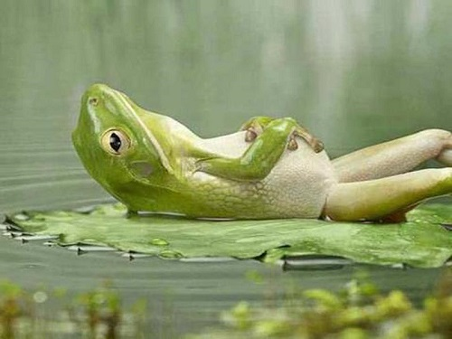
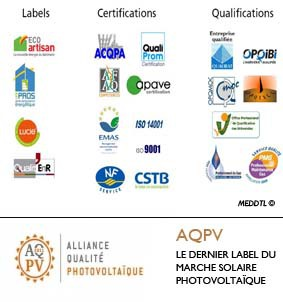
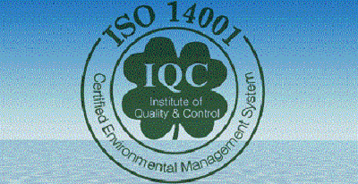

Choisir son installateur
Les principaux risques

Loin de nous l'idée de refroidir les candidats à la production d'électricité verte, mais il existe certains écueils à éviter pour que le rêve ne tourne pas au cauchemar.
Il y a suffisamment d'installations en France pour que les tribunaux donnent une idée précise des principaux risques :
... La majorité des contentieux concerne des problèmes classiques liés au bâtiment. En tête arrivent les défauts d'étanchéité à l'eau et/ou à l'air des panneaux intégrés au bâti (posés en lieu et place de la couverture). Viennent ensuite les retards, abandons de chantier, vices cachés, défauts d'assurances, etc.
... La production effective est parfois largement inférieure à la promesse, et même de nature à empêcher la rentabilité du projet. Les deux causes les plus fréquentes en sont la fourniture de panneaux défectueux ou de mauvaise qualité (de plus en plus rare cependant), et la détection imparfaite d'ombrages qui empêchent le bon fonctionnement des panneaux.
... D'autres litiges, plus rares, concernent essentiellement des défauts d'information de la part des installateurs, conduisant à l'impossibilité d'utiliser l'installation (refus administratifs, recours de tiers?), ou la non éligibilité à des aides financières ou fiscales pourtant présentées comme acquises.
Autres critères à vérifier
Les installateurs sérieux proposent des services complets, et surtout en toute transparence. Demander à visiter une ou plusieurs installations similaires au projet ne doit pas poser de problème.
Voici également une liste (non exhaustive) des sujets à discuter avec chacun des installateurs pressentis :

...Réalise-t-il une étude d'ensoleillement en venant sur place ?
...S'occupe-t-il des démarches administratives et du raccordement ?
...Peut-il s'engager sur une production estimée ?
...Connaît-il les aides, subventions, et régimes fiscaux ? (Attention, s'il ne parle que de ça? fuyez ! Vous n'achetez pas de la défiscalisation)
...Les panneaux sont-ils aux normes ? (NF EN 61215, NF EN 61646)
...Quel est son métier de base (électricien, couvreur,?) ? Sous-traite-t-il ? A qui ?
...Est-il assuré ? Chez qui (demander l'attestation et vérifier) ? A-t-il des sinistres en cours ?
...Va-t-il s'occuper lui-même de la maintenance et du SAV ?
...Propose-t-il des travaux annexes utiles ? (isolation, tableau électrique?)
...Est-il labélisé ?
Les labels d'installateurs
Le label Quali'PV :
Proposé par l'association Qualit'ENR, ce label comporte un module bâtiment (couverture) et un module électricité. Il certifie que l'installateur a suivi une formation (quelques jours), qu'il est audité régulièrement (contrôles sur site), qu'il est assuré, et qu'il a signé une charte de qualité (voir encadré). Les entreprises labélisées bénéficient d'une formation continue sur le sujet et d'une assistance technique. De plus, certaines aides sont réservées aux installations effectuées par des installateurs habilités. Bien sûr, cette qualification ne suffit pas à elle seule, mais elle constitue une bonne présomption de compétence et de qualité.
Le label Insoco (Installation Solaire Contrôlée) :
Ce label indépendant, créé à l'initiative du groupe allemand AS Solar, a la particularité d'inclure les fournisseurs de matériel et la satisfaction des clients dans sa démarche. Révocable à tout moment et doté d'une période probatoire, il se positionne comme une étape supplémentaire au label Quali'PV, dont l'obtention est indispensable pour accéder à la qualification. Enfin, Insoco propose une plate-forme informatique de gestion des projets et conditionne la reconduction du label à réalisation d'au moins dix installations par an.
Engagements et critères d'éligibilité des installateurs Insoco :
...Avoir plus d'un an d'expérience dans le photovoltaïque
...Etre labélisé Quali'PV
...Suivre une formation à la qualité
...Etre assuré pour tous les produits fournis
...Employer du personnel qualifié et assurer sa formation continue
...Réaliser au moins 10 installations par an
Les fournisseurs doivent respecter les critères suivants :
...Proposer des formations pratiques aux installateurs
...Offrir un support technique en français et un service d'assistance sur site
...Accompagner les premiers chantiers d'installation de nouveaux systèmes
...Etre véritablement présent en France (y compris juridiquement)
...Etre certifié ISO 14001 et respecter les droits de l'homme et des enfants
...Proposer du matériel recyclable et respectant les normes en vigueur les plus récentes.